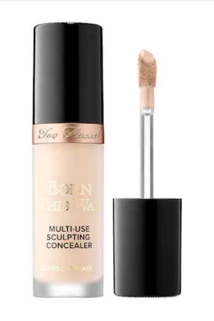
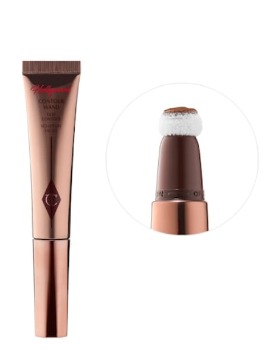
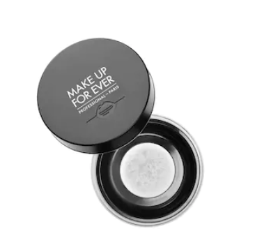
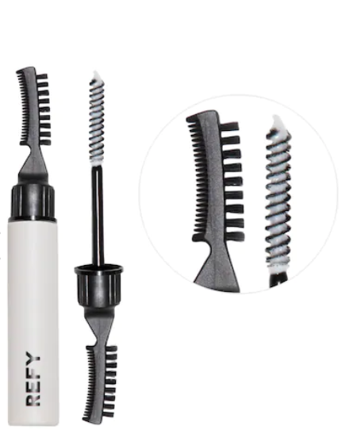
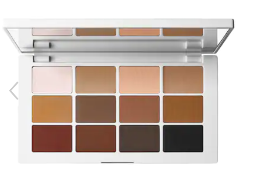

|  | Born This Way Super Coverage Multi-Use ConcealerThe best concealer I have ever used! It is the perfect medium-full coverage concealer that I use on a daily basis. I never use foundation anymore because this concealer does the trick for me! It also stays on throughout the day and never leaves me feeling oily. |
|  | Charlotte Tilbury Hollywood Contour WandThis is the easiest and most blendable liquid contour I have used that gives you the perfect chiseled look! A little goes a long way so be very careful with using too much of it. It also is unfortunately always sold out so I have to always make sure I always have backups of this product in my collection. |
|  | Make Up For Ever Ultra HD Microfinishing Loose PowderI have skin that gets oily pretty easily and I have tried countless powders on the market to only find this one as the best at keeping me matte throughout the day. You have to be careful with this powder however, because with flash photography, it can turn white. I use this in the day to keep my makeup locked and set. |
|  | Brow Sculpt Shape and Hold Gel with Lamination EffectFluffy, feather brows are in! I love using this brow gel to help me create that look of full, bushy eyebrows. I have pretty thick brows so this gel really helps to keep all the brow hairs in place throughout the day! I love the little spoolie and brush at the end of the product, the packaging is super well thought of. |
|  | MAKEUP BY MARIO Master Mattes Eyeshadow PaletteThis is genuinely my must-have eyeshadow for everyday. It has all the nude and natural tones you need for everyday eye looks. The shades are perfectly pigmented and are super easy to use for beginners as well! These shades are also super blendable to its perfect for everyday wear. I have countless eyeshadow palettes and I never use any of them anymore because all the shades I need are in this one handy palette! |